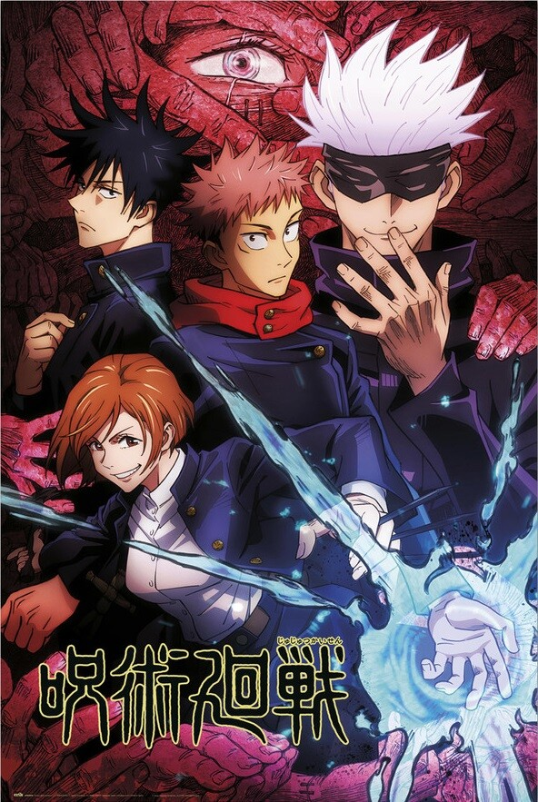
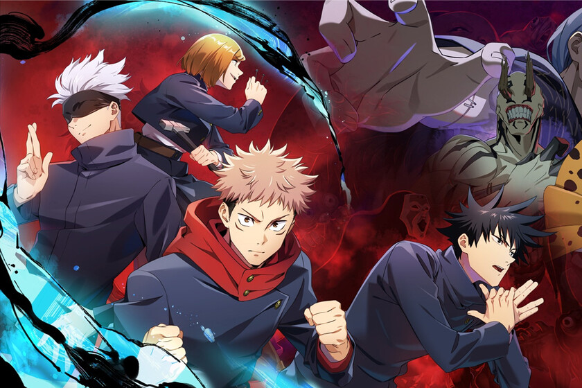

In Jujutsu Kaisen, all living beings emanate energy called Cursed Energy, which arises from negative emotions that naturally flow throughout the body. Ordinary people cannot control this flow in their bodies. As a result, they continually lose Cursed Energy, resulting in the birth of Curses,a race of spiritual beings whose primary desire is to bring harm to humanity. These curses are shown as gruesome monsters. Jujutsu Sorcerers are people who control the flow of Cursed Energy in their bodies, allowing them to use it as they please and also to reduce its release. High-ranking Sorcerers and Curses can refine this energy and use it to perform Cursed Techniques, which tend to be unique to the user or their family. An advanced form of Cursed Technique is Domain Expansion, which the users build a pocket dimension of variable size. Inside the domain, all of their attacks will always connect and grow in strength.
 